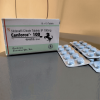
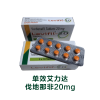

¥99 马牌伟哥 西地那非助勃单效 10粒装【商品名称】枸橼酸西地那非片(万艾可)
【英文名称】sildenafil citrate tablets
【成份】每片含枸橼酸西地那非相当于100毫克西地那非。
【性状】本品为蓝色薄膜衣片，除去包衣片后显白色。
【适应症/功能主治】枸橼酸西地那非片适用于治疗勃起功能障碍。
【用法用量】 对大多数患者，推荐剂量为50mg，在性活动前约1小时服用；但在性活动前0.5～4小时内的任何时候服用均可。基于药效和耐受性，剂量可增加至100mg（最大推荐剂量）或降低至25mg。每日最多服用1次。
【不良反应】 头痛、潮红、消化不良、鼻塞及视觉异常等。视觉异常为轻度和一过性的，主要表现为视物色淡、光感增强或视物凝。
【禁忌】 服用任何剂型硝酸酯类药物的患者，无论是规律或间断服用，均为禁忌症。对西地那非（万艾可）中任何成分过敏的患者禁用。
【原理】 本品是治疗勃起功能障碍的口服药物，他是西地那非的枸橼酸盐，一种环磷酸鸟苷特异的5型磷酸二酯酶的选择性抑制剂。作用机制：阴茎勃起的生理机制涉及性刺激过程中阴茎海绵体内一氧化氮（NO）的释放。NO激活鸟苷酸环化酶导致环磷酸鸟苷（cGMP）水平增高，使海绵体内平滑肌松弛，血液充盈。
【药物相互作用】 其他药物对西地那非的作用：体外实验：本品代谢主要通过细胞色素P450 3A4（主要途径）和2C9（次要途径）
【药代动力学】 本品口服吸收迅速，30～120min达血药峰值，1h内奏效。生物利用度约40%。食物能明显降低本品吸收速度、程度和作用的发生。本品在肝脏主要经CYP 3A4介导代谢为活性代谢物，约80%经粪便排泄，13%由尿排泄，在jing液中排泄不到0.001%。母体药物和活性代谢物的半衰期均为4h。65岁以上老年男性、肝功能不全和肾功能严重损害病人，清除率降低。
【注意事项】 西地那非-硝酸酯类影响血压的相互作用，可从给药开始持续到整个6小时的观察期内。所以，在任何情况下，联合给予西地那非和有机硝酸酯类或提供NO类药物（如硝普钠）均属禁忌。以下患者慎用西地那非：阴茎解剖畸形（如阴茎偏曲、海绵体纤维化、Peyronie氏病），易引起阴茎异常勃起的疾病（如镰状细胞性贫血、多发性骨髓瘤、白血病）。其他治疗勃起功能障碍的方法与本品合用的安全性和有效性尚未研究，不推荐联合使用。在已有心血管危险因素存在时，用药后性活动有发生非致命性/致命性心脏事件的危险。在性活动开始时如出现心绞痛、头晕、恶心等症状，须终止性活动。国外批准本品上市后，有少量勃起时间延长（超过4小时）和异常勃起（痛性勃起超过6小时）的报告。如持续勃起超过4小时，患者应立即就诊。如异常勃起未得到即刻处理，阴茎组织将可能受到损害并可能导致永久性勃起功能丧失。西地那非对性传播疾病无保护作用。
【孕妇及哺乳期妇女用药】 西地那非不适用于新生儿、儿童或妇女。
【老年用药】 健康老年志愿者（≥65岁）的西地那非清除率降低，鉴于血药浓度较高可能同时增加疗效和不良事件的发生，故起始剂量以25mg为宜。
【贮藏】药品阴凉贮存区(20℃以下)。
 ¥100
马牌希爱力加强版 助勃 VIDALISTA 他达那非 40毫克/粒 10粒装
¥100
马牌希爱力加强版 助勃 VIDALISTA 他达那非 40毫克/粒 10粒装
【产品名称】马牌他达拉非片
【商品名/商标】VIDALISTA-40
【规格】每粒含他达拉非40mg，一板10片。
【主要成份】他达拉非
【保质期】24个月
【生产日期/有效期】见包装盒
【生产厂家】印度Centution实验室制药
【适应症】 治疗男性勃起功能障碍。需要性刺激以使本品生效。他达拉非不能用于女性。
【用法用量】口服：
用于成年男性：本品规格40mg/粒，在进行性生活之前30-60分钟服用，不受进食的影响。最大服药频率为每日一次。最好不要连续每日服用，因为本品的作用经常持续超过24小时，甚至可达36小时。
- 所有的服用量为0.5-1粒之间，阳萎、早泄轻重程度不同，体质的不同，服用量也不同。以自己满意为准！
- 18岁以下者不得服用本品。
【不良反应】 -最常见的不良反应是头痛和消化不良。这些不良反应是 一过性的、且一般为轻度或者是中度的。放心，喝口水休息一会很快就会恢复正常，对身体无任何伤害！切勿紧张，否则会影响效果！
【禁 忌】
-患心血管病患者禁服本品。服用任何剂型硝酸酯类药物的患者，无论是规律或间断服用，均为禁忌症。
- 对他达那非中任何成分过敏的患者禁用。
- 对他达那非中任何成分过敏的患者禁用。
- 最近6个月内发生过中风的患者、已知对他达拉非及其处方中的成分过敏的患者不得服用本品。

¥120 改善治疗 艾力达 Levifil 伐地那非片 10粒装